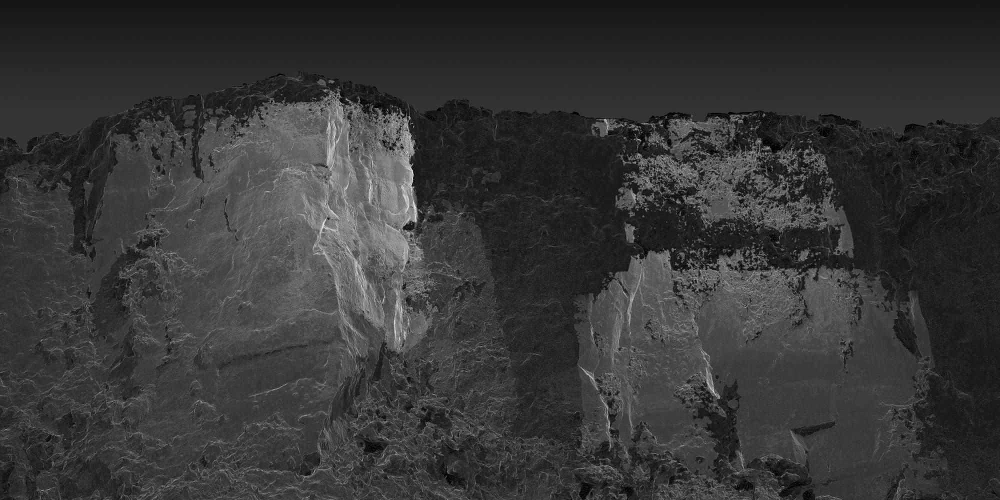
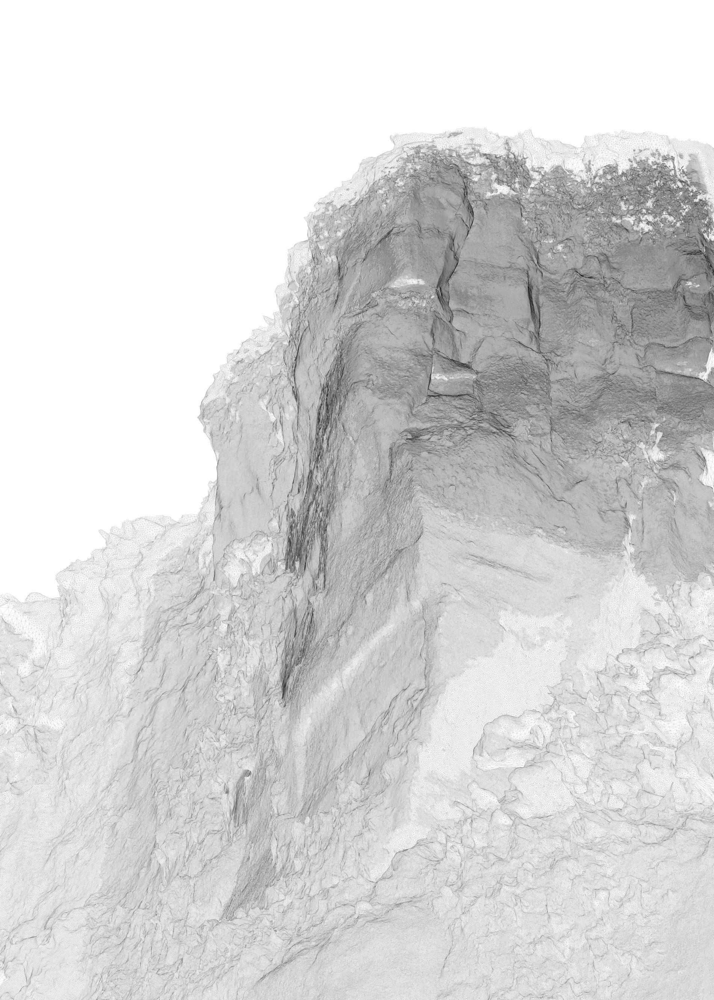
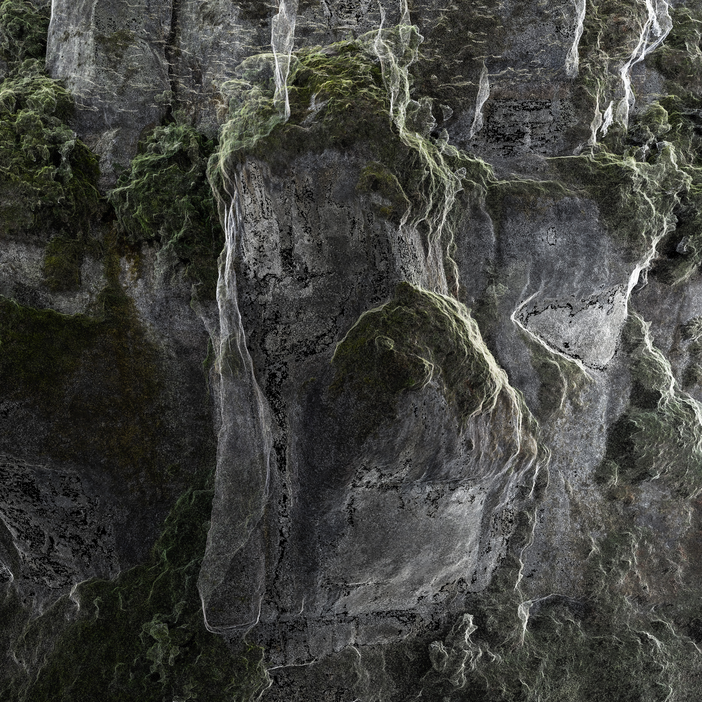
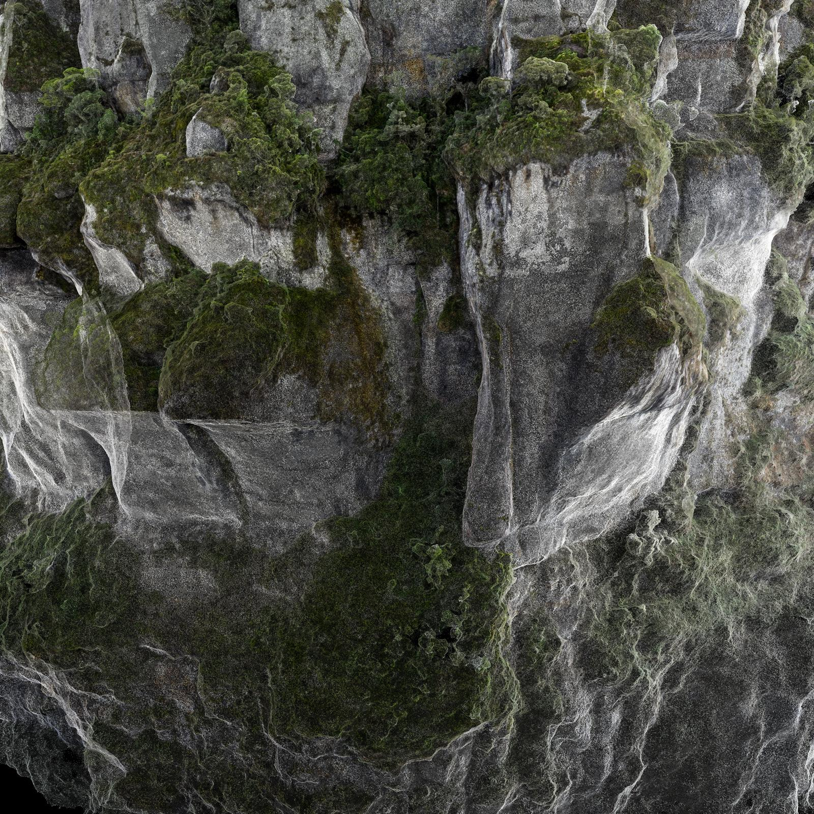
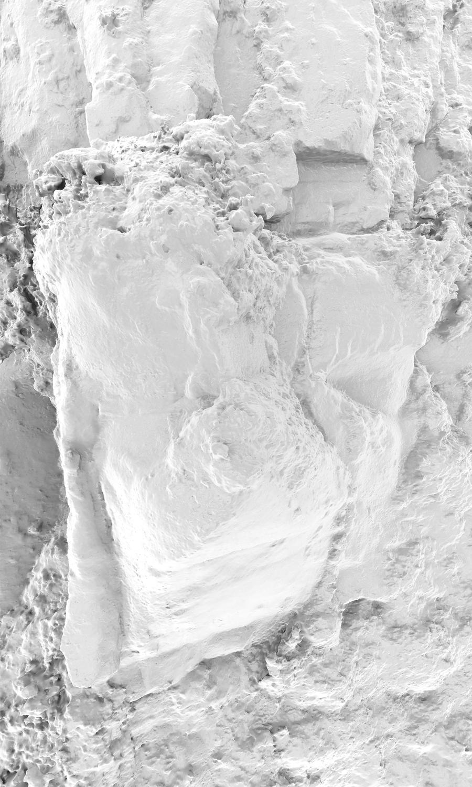
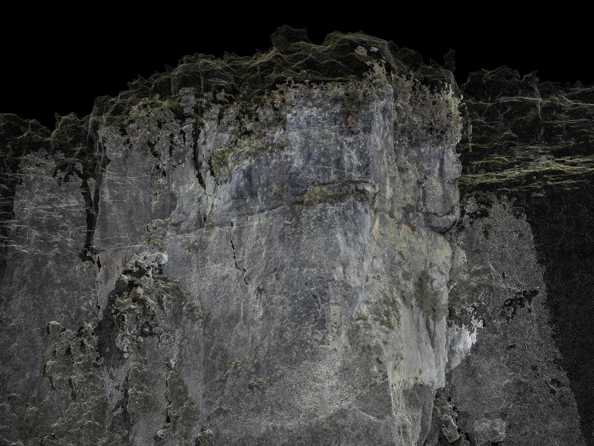
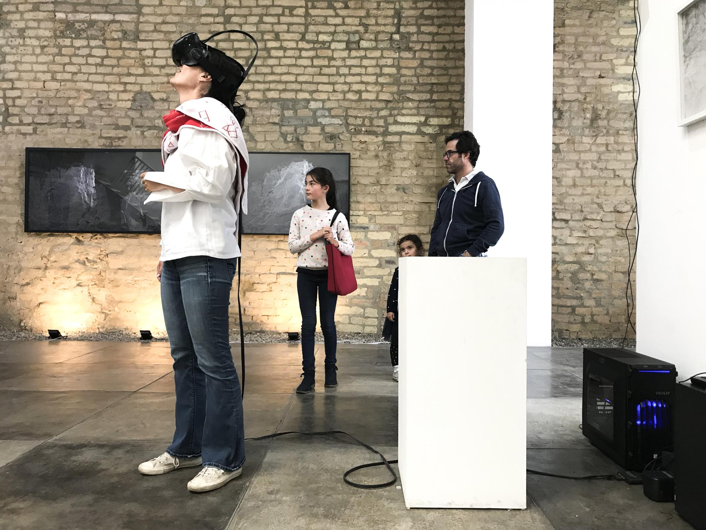
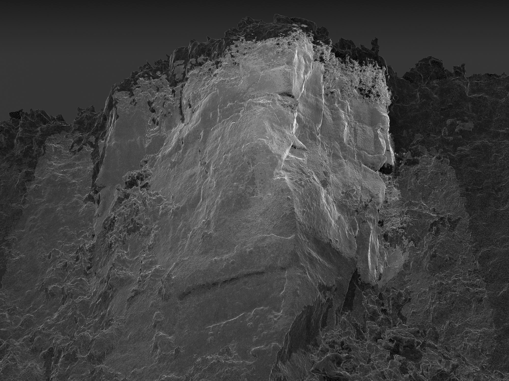

SUBACHOQUE. CO
(2019)
POINTS IN THE CLOUDS
"Point-cloud" (in its technical sense) refers to a set of data points in a 3D space, acquired in this case through the process of photogrammetry. It is a dialogue between the virtual and the physical world. This project consists of a series of after-images that come to "life" from hundreds of pictures of the same subject. The act of repetition obtains a new meaning.
Cerro del Tablazo, in the savannah of Cundinamarca in Colombia, is not just a biogeographic border where clouds are shaped from the waters that rise from the Magdalena river valley. It is a territory beyond our vision, a nebulous space for thought. The plates evoke a past, but also relate to an eternal present. As Ignacio Piedrahita mentions, "it is hard to think of the rock as an inert body, when we know that the electrons vibrate at the same rhythm as the body that is holding it."
Ultimately, these series of images are interfaces to a new visual regime. One in which the cloud, as a simple metaphor for a collective heritage of data, points to the obscurity of mediations of the contemporary human experience, and forces us to consider a "new realism" for the production of senses from algorithmic visual stimuli. Also, it is an invitation to an open discussion of "surface and depth" in the oversaturated landscape of our time.
Cerro del Tablazo, in the savannah of Cundinamarca in Colombia, is not just a biogeographic border where clouds are shaped from the waters that rise from the Magdalena river valley. It is a territory beyond our vision, a nebulous space for thought. The plates evoke a past, but also relate to an eternal present. As Ignacio Piedrahita mentions, "it is hard to think of the rock as an inert body, when we know that the electrons vibrate at the same rhythm as the body that is holding it."
Ultimately, these series of images are interfaces to a new visual regime. One in which the cloud, as a simple metaphor for a collective heritage of data, points to the obscurity of mediations of the contemporary human experience, and forces us to consider a "new realism" for the production of senses from algorithmic visual stimuli. Also, it is an invitation to an open discussion of "surface and depth" in the oversaturated landscape of our time.
A PROJECT BY: CARLOS SERRANO, ÁLVARO RODRÍGUEZ & JUAN DAVID FIGUEROA






